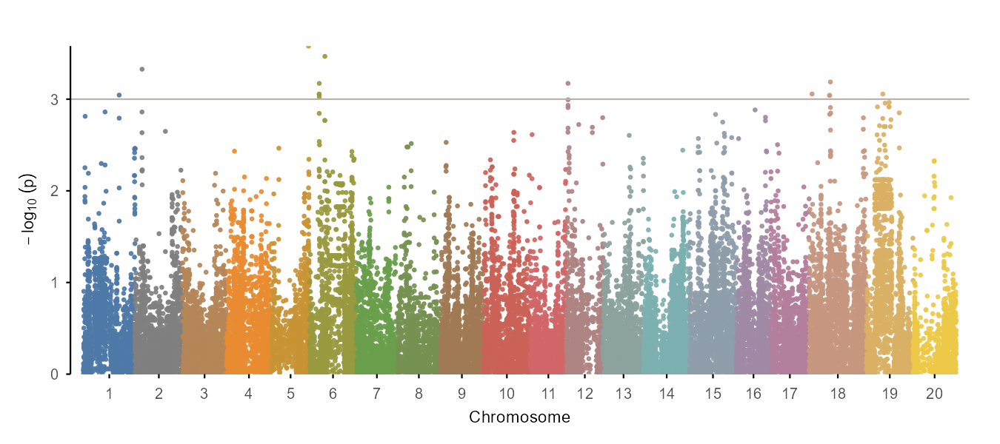
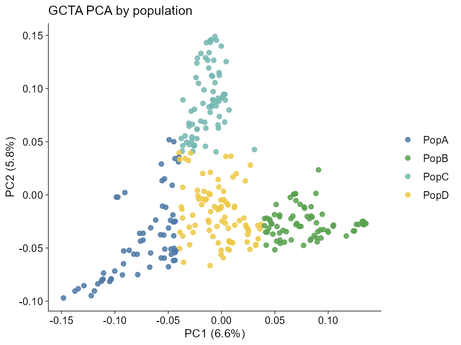
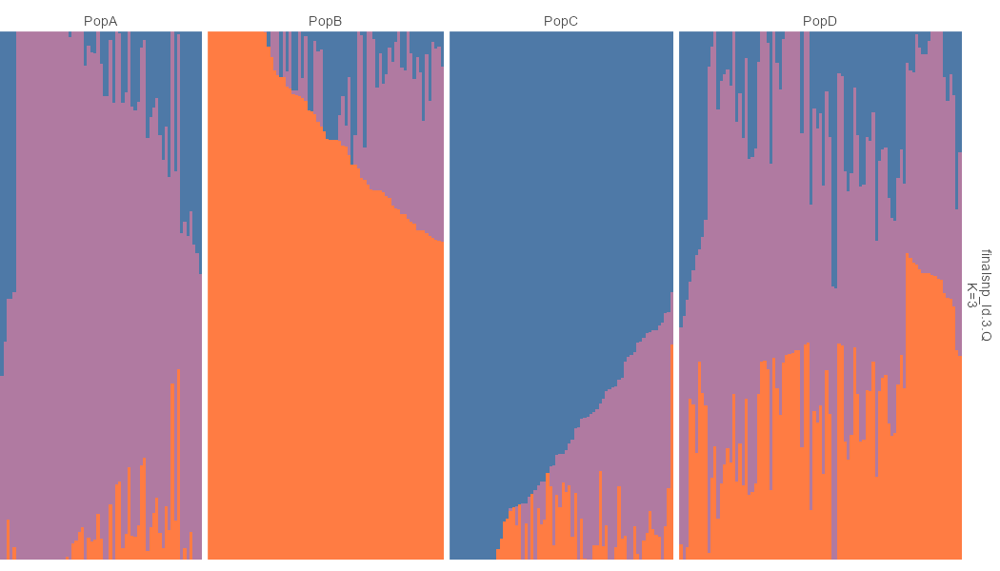
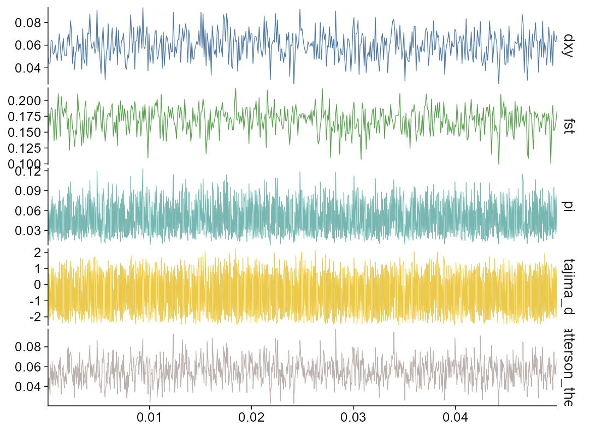
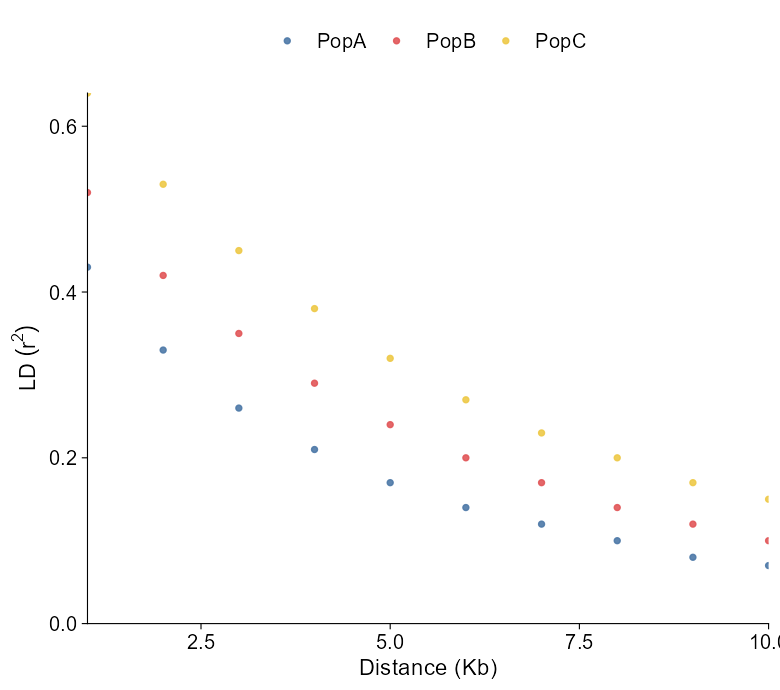
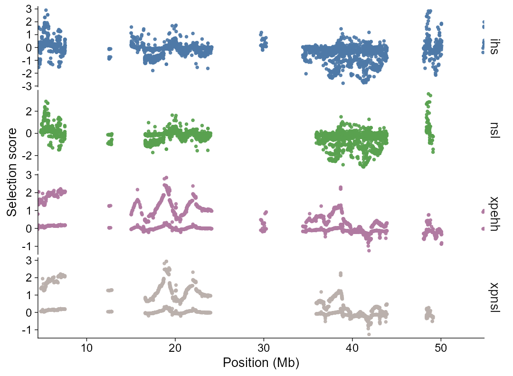
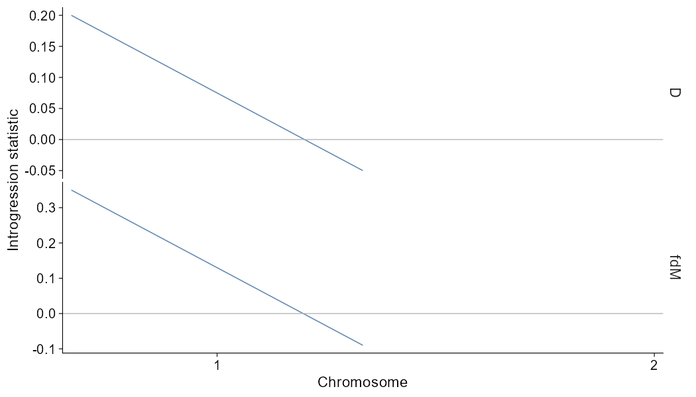
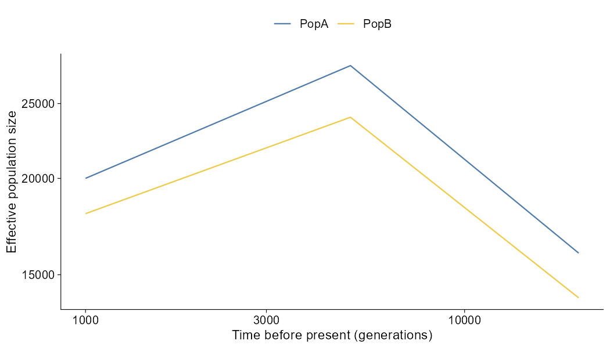

The goal of ggPopi is to streamline publication-ready population-genomics visualization in R. It combines typed import helpers, direct plotting functions, and composable ggplot2 extension layers for GWAS, PCA, and admixture results. It also includes a population genomics statistics module for windowed FST, pi, Tajima’s D, Dxy, and Watterson’s theta summaries, LD decay curves, plus selective sweep scan plots for selscan and XPCLR outputs, and introgression summaries from Dsuite, genomics_general, TreeMix-style edge tables, and ADMIXTOOLS2 qpGraph outputs. It also includes effective population size history curves from PSMC, MSMC2, SMC++, and Stairway Plot 2 outputs.
ggPopi focuses on a tidy workflow:
import_gwas("assoc.mlma", type = "gcta") |>
plot_manha()
import_gwas("assoc.mlma", type = "gcta") |>
ggpop() +
geom_manha()Both paths return ggplot objects. The direct plot_*() functions define the publication-style visual contract, and the matching geom_*() layers follow the same defaults inside a ggpop() pipeline.
The package name is ggPopi; the core layered constructor remains ggpop() for API continuity.
GWAS Manhattan plots support explicit palette control:
plot_manha(gwas, palette = "publication")
plot_manha(gwas, palette = c("#4E79A7", "#C4E2F3"), binary = TRUE)
plot_manha(gwas, threshold_color = "#D55E00", suggestive_color = "grey70")Manhattan-like genome views use the same alternating #4E79A7 / #C4E2F3 chromosome palette by default.
Installation
You can install the development version from GitHub with:
# install.packages("pak")
pak::pak("WWz33/ggPopi")The core package uses CRAN-available dependencies for native plotting. The GWAS module includes internal fastman-style Manhattan and Q-Q plotting logic, so ordinary GWAS plots do not require installing fastman.
Dependency repository policy:
-
pophelperis unmodified and points to the original upstream repository. -
flashpcaRrequired Windows source-install fixes and points to https://github.com/WWz33/flashpca.
Usage
Here are the main workflows.
Also have a look at the getting started guide and the full documentation.
library(ggPopi)
import_gwas("assoc.mlma", type = "gcta") |>
plot_manha()

import_gwas("assoc.mlma", type = "gcta") |>
ggpop() +
geom_manha()
import_pca(
"plink.eigenvec",
type = "plink",
pop_group = "pop_group.txt"
) |>
plot_pca()

pop_group is optional at plot time:
plot_pca(pca, pop_group = FALSE)
import_admix(
"admixture_results/",
type = "admixture",
ind = "samples.fam",
pop_group = "pop_group.txt"
) |>
plot_admix(k = 3, sort = "all", order_group = TRUE)

pop_group is optional at plot time:
plot_admix(admix, k = 3, pop_group = FALSE)
import_admix(
"admixture_results/",
type = "admixture",
ind = "samples.fam",
pop_group = "pop_group.txt"
) |>
ggpop() +
geom_admix(k = 3, sort = "all", order_group = TRUE)Population groups use a simple two-column sample pop file:
sample pop
P001 PopA
P002 PopB
import_stats("pixy_results/", type = "pixy") |>
plot_stats(stat = "all", chr = "chr2L")

import_stats("vcftools_results/", type = "vcftools") |>
plot_stats(stat = "all", chr = "chr2L")
ld_decay <- import_ld_decay(
"PopLDdecay_results/",
type = "poplddecay",
pop_group = "pop_group.txt"
)
plot_ld_decay(ld_decay, style = "point")
plot_ld_decay(ld_decay, style = "line")
plot_ld_decay(ld_decay, style = "fit")

selscan_chr1 <- import_selection(
"selscan_results/",
ihs = "chr1.ihs.out.100bins.norm",
nsl = "chr1.nsl.out.100bins.norm",
xpehh = "chr1.xpehh.out.norm",
xpnsl = "chr1.xpnsl.out.norm",
type = "selscan"
)
plot_selection(
selscan_chr1,
stat = c("ihs", "nsl", "xpehh", "xpnsl"),
chr = "1"
)

Selection plots support signed or absolute score views. Fixed thresholds such as threshold = 2 draw score cutoffs directly, while threshold = 0.95, threshold_type = "quantile" derives a cutoff from the filtered scan values. Genome-wide calls default to a Manhattan-like chromosome axis; calls with chr, start, or end default to a single-region view.
intro <- import_introgression(
"introgression/vcf_pop_example/ABBABABA_window.csv",
type = "genomics_general"
)
plot_introgression(intro, stat = c("D", "fdM"))

The bundled vcf_pop_example table is a compact genomics_general-style window summary derived from the package VCF and the shared pop_group.txt metadata for examples and tests.
Trio-level D-statistics and graph edge tables use the same import and direct plot shape:
import_introgression("Dtrios.tsv", type = "dsuite_dtrios") |>
plot_introgression()
import_introgression("qpgraph_edges.tsv", type = "qpgraph") |>
plot_introgression()
ne_history <- import_ne_history("smcpp_model.csv", type = "smcpp")
plot_ne_history(ne_history)

Ne history plots read output from PSMC, MSMC2, SMC++, or Stairway Plot 2. Raw VCF and pop_group.txt files are upstream inputs to those tools, not direct Ne history curves.
Interface
The recommended user-facing API is intentionally small.
| Module | Import | Direct plot | ggplot extension |
|---|---|---|---|
| GWAS Manhattan | import_gwas() |
plot_manha() |
ggpop() + geom_manha() |
| GWAS Q-Q | import_gwas() |
plot_qq() |
ggpop() + geom_qq() |
| PCA |
import_pca() / compute_pca()
|
plot_pca() |
ggpop() + geom_pca() |
| Admixture | import_admix() |
plot_admix() |
ggpop() + geom_admix() |
| Population statistics | import_stats() |
plot_stats() |
ggpop() + geom_stats() |
| LD decay | import_ld_decay(method = ...) |
plot_ld_decay(measure = ...) |
ggpop() + geom_ld_decay(measure = ...) |
| Selective sweeps | import_selection() |
plot_selection() |
ggpop() + geom_selection() |
| Introgression | import_introgression() |
plot_introgression() |
ggpop() + geom_introgression() |
| Ne history | import_ne_history() |
plot_ne_history() |
ggpop() + geom_ne_history() |
| Population groups | import_pop_group() |
used by plot functions | used by geom layers |
Advanced compatibility helpers remain available for users who need direct backend behavior, but ordinary workflows should prefer the import_*() |> plot_*() and import_*() |> ggpop() + geom_*() interfaces.
Color Schemes
ggpop provides a unified discrete palette entry for population-genomics categorical variables. PCA population colours and admixture cluster fills use the same publication-oriented palette system by default.
ggpop_palette(5, "population")
ggpop_palette(5, "admixture")
scale_colour_ggpop("population")
scale_fill_ggpop("admixture")Fixed Installation Issues
This version includes dependency fixes needed for reliable source installation:
- replaced
flashpcaR/flashpcaR/src/*.cppandsrc/*.hpath stubs with real source files; - changed
flashpcaR/flashpcaR/src/MakevarsandMakevars.winfromCXX11toCXX14; - embedded fastman-style Manhattan and Q-Q plotting behavior in native ggplot layers.
Documentation
- GWAS guide Manhattan and Q-Q plotting workflows
- PCA guide PCA imports, population colours, and plotting
- Admixture guide ADMIXTURE/STRUCTURE imports, group labels, and sorting
- Population statistics guide Windowed FST, pi, Tajima’s D, Dxy, and Watterson’s theta plotting
- LD decay guide PopLDdecay imports with point and line plot styles
- Selective sweep guide selscan and XPCLR imports, signed or absolute score plots, and quantile thresholds
- Introgression guide Dsuite, genomics_general, TreeMix-style, and qpGraph introgression plotting
- Ne history guide PSMC, MSMC2, SMC++, and Stairway Plot 2 effective population size histories